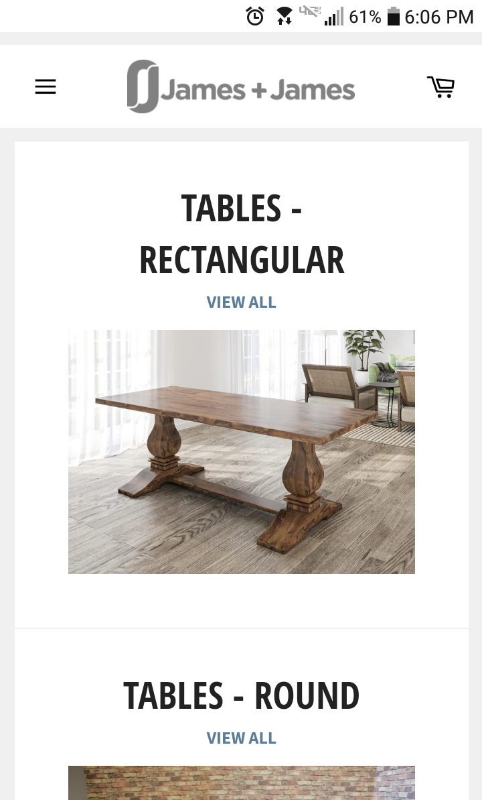
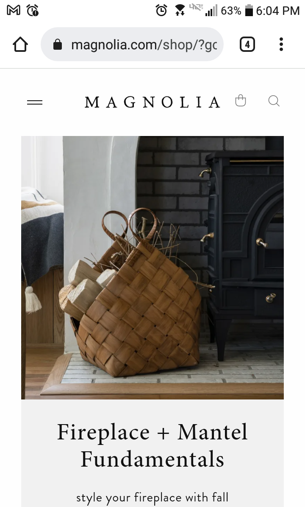

Alignment
James + James Furniture
The alignment of the James and James pages are consistent, clean and well organized. They keep the focus on center aligned content, and the same alignment stays consistent throughout the entire site. Their image, headlines, 'view all' buttons, etc all stay in the center of the screen. They are consistently aligned in such a way that does not distract from the content they are showcasing. Even in the header, the company name, James + James with the logo are centered on the screen. The only items that deviate from this design is the shopping cart and menu icons, they are placed in an accessible area on the screen.
Visual Hierarchy
Downeast

Downeast makes good use of the design principle, visual hierarchy on it's home page. The first item to catch our attention is the image and the large text going across stating "Autumn Essentials" from there, our eye moves to the 'Join our Email Club' popup at the bottom followed by the 'Free Shipping' banner and then lastly the name of the page, 'DOWNEAST.' The way our eyes bounce from one part of the page to the next is easy, and there is visually things that are more important and designed to catch our attention first everything else falls into place when it is called or needed.
White Space + Clean Design
Magnolia
I love the white space, and the overall clean feel that Magnolia carries throughout their site. There are visual boxes that keep similar content together- making great use of the princple of proximity, but it als shows what content fits together in what category without menus declaring the content as such. There is plenty of space for the eyes to relax and just enjoy the content, it isn't overly busy even with all the different options and products you can find on this site. The site is simplified and most of the items are left in the menu rather than showing up on the page itself first thing.